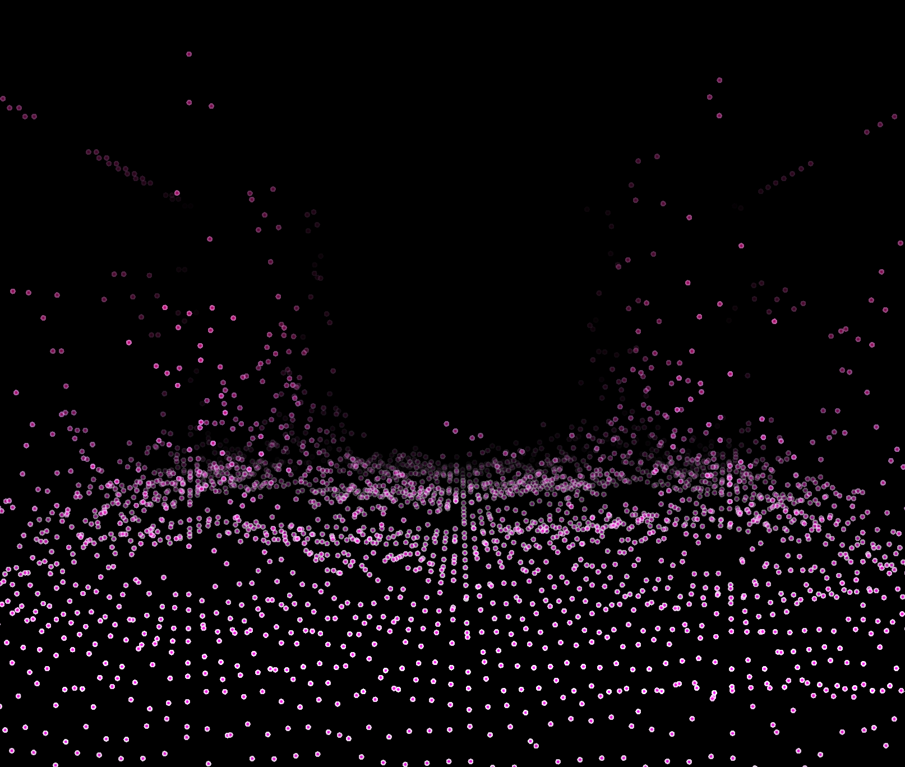

E-mail: yli76@calpoly.edu | ahartfor@calpoly.edu | bahickma@calpoly.edu
CPE 476 Quarter Project - Spring 2022
Experience is a small expressive game about the process of trying to improve at something. The game involves walking through various environments which evoke feelings like those experienced when learning something new.
The game takes place from a first-person perspective, and in service of the goal of making the game as relatable to all people, we will not define the character further than is necessary.
The Gameplay involves walking and looking around. There is another potential mechanic, which is picking up a piece of paper and reading it. These pages would be hidden around the world.
The environments of the game are threefold. To travel from one area to the next, go through the fog at the edge of each environment.
At first, the player will be in a quiet wood, which has small secrets, like a snail on a leaf or a stream leading to a small lake. There will be a Mist effect, as well as Ambient Occlusion. We used Instanced Rendering alongside Height maps to achieve our environment.
// Setup Audio Source
audioTransportSource.prepareToPlay (samplesPerBlockExpected, sampleRate);
// Setup Ring Buffer of GLfloat's for the visualizer to use
// Uses two channels
ringBuffer = new RingBuffer (2, samplesPerBlockExpected * 10);
Rendering the Forest:
Next, the player will find themselves in a desert wasteland, with long stretches of empty land and steep sand dunes. There will be a Bloom and Blur effect and heavy Lens Flare, to make the journey feel arduous. Deep in the desert you may find some small secrets, like an amulet in the sand or a dinosaur fossil. We’ll also use Fog effects to create a sandstorm.
Rendering the Desert:
Finally, the player will find themselves on a dark street in the middle of the night. No stars in the sky, just loneliness. We’ll use Bloom to achieve the look of a lone streetlamp lighting the path.
// Get the data from the ring buffer
FloatVectorOperations::add (fftData, readBuffer.getReadPointer(0, 0), RING_BUFFER_READ_SIZE);
FloatVectorOperations::add (fftData2, readBuffer.getReadPointer(1, 0), RING_BUFFER_READ_SIZE);
// Calculate FFTs
forwardFFT.performFrequencyOnlyForwardTransform (fftData);
forwardFFT.performFrequencyOnlyForwardTransform (fftData2);
// Find the range of values produced for excluding samples
Range maxFFTLevel = FloatVectorOperations::findMinAndMax (fftData, fftSize / 2);
Range maxFFTLevel2 = FloatVectorOperations::findMinAndMax (fftData2, fftSize / 2);
Rendering the Street: